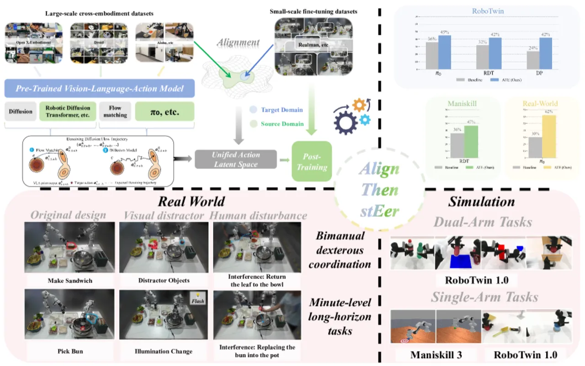
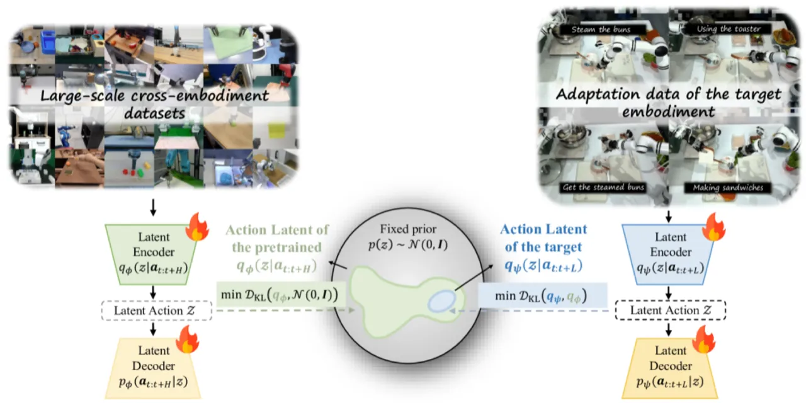
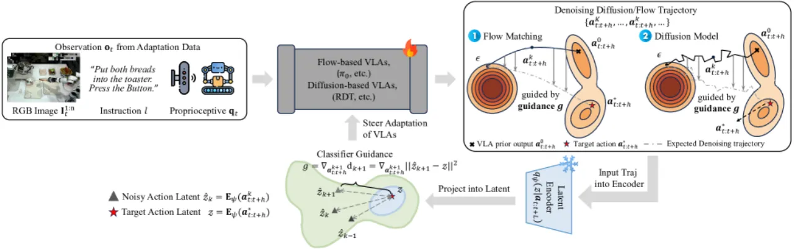
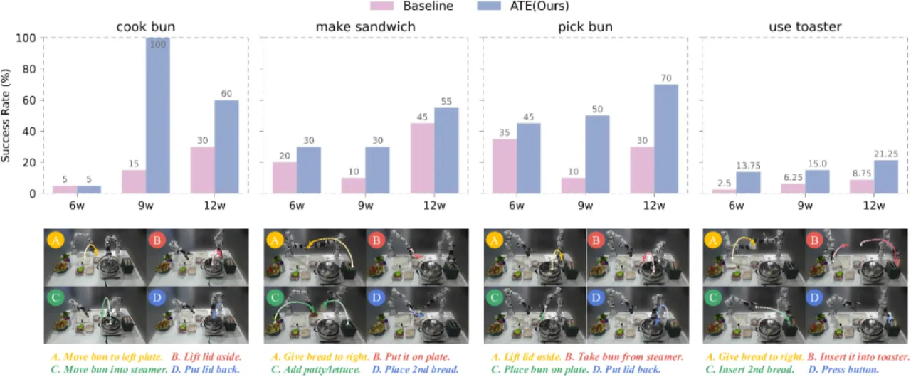
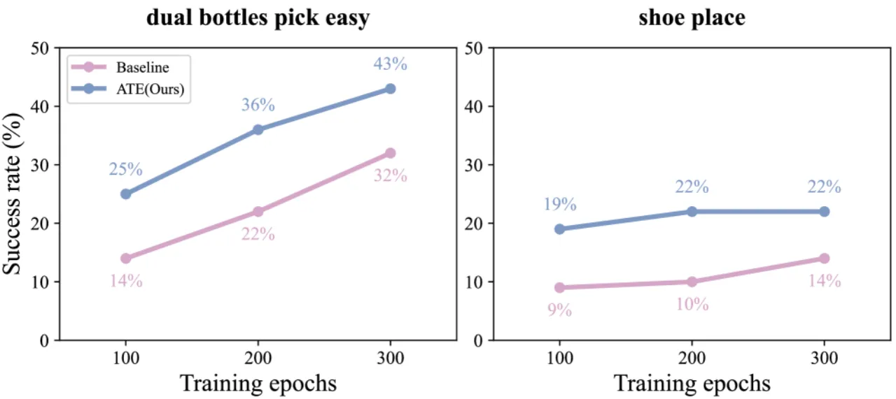
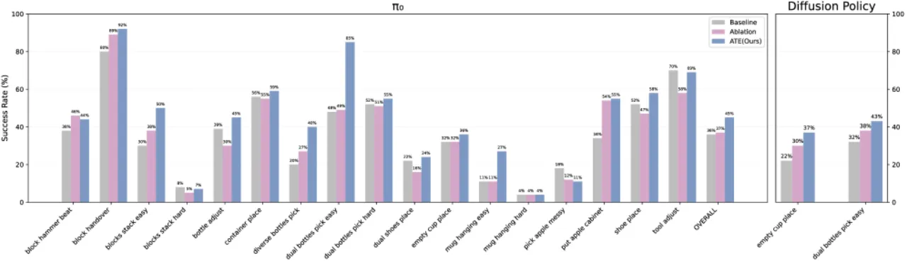

ATE 是一个即插即用的 VLA 适配框架：首先利用非对称 VAE 将不同机器人平台的动作空间对齐到统一隐空间，再通过 classifier guidance 将扩散/流式 VLA 的生成过程导向目标分布，从而以极少数据实现跨任务与跨机器人的高效迁移。在仿真 RoboTwin 与 ManiSkill 基准上平均提升 9.8%，在真实双臂 RealMan 机器人跨机器人场景中提升 32% 成功率。
大规模预训练的 Vision-Language-Action（VLA）模型在通用机器人控制上展现出巨大潜力，但将其适配到新机器人平台或新任务时面临两大核心挑战：动作空间异构（不同机器人的 DoF、动作量纲、频率均不同）与数据稀缺（现实中目标任务数据往往只有数十条轨迹）。直接在目标任务上 fine-tune 往往导致灾难性遗忘，丢失预训练阶段习得的视觉-运动先验。
"Unlike prior methods that directly fine-tune VLAs, ATE aligns disparate action spaces into a unified latent representation and steers the VLA's generation via guidance, enabling data-efficient cross-task and cross-embodiment adaptation."

ATE 分两个阶段：Stage 1 利用非对称 VAE（Info-VAE）将预训练阶段与适配阶段的动作空间统一到同一隐空间；Stage 2 在 fine-tuning 时引入 classifier guidance，将扩散/流式 VLA 的去噪过程向目标隐空间的 mode 导引，同时保留预训练积累的视觉-运动先验。整个额外计算量仅来自两个轻量 VAE，对原始 VLA 架构零改动。

第一阶段的关键设计在于使用反向 KL 散度（reverse KL）约束适配 VAE，令其具有 mode-seeking 行为。这确保适配动作的隐表示落在预训练隐空间的高密度区域，而非分散到各处，从而保证下游引导信号的有效性。两个 VAE 均为轻量结构，训练成本远低于 VLA 本身。

在推理阶段，classifier guidance 梯度 g 无需目标动作标注（标注仅用于训练 VAE），因此推理过程与标准 VLA 相同，无额外延迟。这一设计对 diffusion policy 与 flow matching 两类生成框架均适用，与 backbone 选择无关。
实验在三个层面验证 ATE：（1）仿真基准 RoboTwin 1.0（17 个任务）与 ManiSkill3（2 个任务）；（2）真实双臂 RealMan 7-DoF 机器人（4 个任务）；（3）鲁棒性测试（光照变化、视觉干扰、人工干预）。Backbone 选取 RDT-1B、π₀、Diffusion Policy。适配数据仅 50 条/任务（仿真）或 50 条/任务（真实）。
| 任务 | RDT-1B | RDT+ATE | π₀ | π₀+ATE |
|---|---|---|---|---|
| Block Hammer Beat | 52% | 71% (↑19) | 38% | 44% (↑6) |
| Block Handover | 69% | 91% (↑22) | 80% | 92% (↑12) |
| Blocks Stack (Easy) | 10% | 31% (↑21) | 30% | 50% (↑20) |
| Dual Bottles Pick (Easy) | 76% | 87% (↑11) | 48% | 85% (↑37) |
| Empty Cup Place | 22% | 61% (↑39) | 32% | 36% (↑4) |
| Put Apple Cabinet | 20% | 45% (↑25) | 34% | 55% (↑21) |
| Bottle Adjust | 53% | 37% (↓16) | 39% | 45% (↑6) |
| 平均（17 任务） | 31.8% | 41.6% (↑9.8) | 36.1% | 44.8% (↑8.7) |
| 任务 | RDT-1B | RDT+ATE |
|---|---|---|
| Push Cube | 65.2% | 78.4% (↑13.2) |
| Pick Cube | 7.6% | 14.8% (↑7.2) |
| 平均 | 36.4% | 46.6% (↑10.2) |



消融结果表明，两阶段 Info-VAE 设计是性能提升的核心：仅靠单阶段 VAE（缺乏与预训练隐空间的对齐约束）无法有效保留预训练先验，导致长时序任务和高难度任务的成功率显著下降。
Stage 1 的预训练 VAE 需要访问预训练阶段的动作数据以构建统一隐空间。若预训练数据不可获取（如闭源 VLA），则无法复现完整的对齐流程。论文使用 OXE subset、DROID、Kuka、ALOHA 等公开数据集进行 VAE 训练（3000 episodes）。
在 RoboTwin 1.0 上，少数任务出现性能下降：Bottle Adjust（RDT: 53% → 37%，↓16）、Blocks Stack Hard（π₀: 8% → 7%，↓1）、Tool Adjust（π₀: 70% → 69%，↓1）。这说明当目标任务动作分布与预训练隐空间的 mode 差异较大时，强制对齐可能带来负面效果。
真实机器人实验仅在双臂 RealMan 7-DoF 平台上进行，任务局限于厨房场景（Cook Bun、Pick Bun、Make Sandwich、Use Toaster），鲁棒性测试每种条件仅 5 trials。跨平台（如不同 DoF 或移动底盘）的泛化能力尚未验证。
虽然论文声称 ATE 引入"可忽略的额外开销"，但 Stage 2 的 classifier guidance 在每个去噪步骤 k 需要计算梯度 g，实时部署时可能对推理延迟产生影响，论文未给出量化延迟数据。